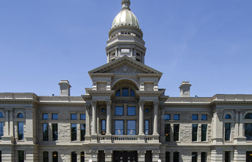

Romney proposes giving $1,000 to every American adult as coronavirus response measure
By CNN
Republican Sen. Mitt Romney of Utah on Monday outlined a list of proposals to address the coronavirus outbreak, including giving all American adults $1,000 in response to fallout from the spread of the disease.
Romney’s office framed the proposals as a way to ensure economic stability for working Americans.
“Every American adult should immediately receive $1,000 to help ensure families and workers can meet their short-term obligations and increase spending in the economy,” a release from Romney’s office states, adding, “Congress took similar action during the 2001 and 2008 recessions. While expansions of paid leave, unemployment insurance, and SNAP benefits are crucial, the check will help fill the gaps for Americans that may not quickly navigate different government options.”
In addition to that, Romney’s proposals call for providing grants to affected small businesses, measures aimed at easing financial burdens for students during this time and actions to bolster telehealth services amid the outbreak.
The House and Senate have already taken action to respond to the coronavirus outbreak, but lawmakers on both sides of the aisle say that more must be done for public health and welfare and for the economy amid mounting fears over the disease.
The House and Senate have already taken action to respond to the coronavirus outbreak, but lawmakers on both sides of the aisle say that more must be done for public health and welfare and for the economy amid mounting fears over the disease.
Earlier this month, Congress passed a multi-billion dollar response package. The House followed that by passing a second response package at the end of last week negotiated with the Trump administration. The Senate is expected to take up and pass that legislation this week.
In a statement, Romney said, “the House coronavirus response package contains critical measures to help families in Utah and across the nation in the midst of the coronavirus outbreak, and the Senate should act swiftly on this legislation.”
He added, “We also urgently need to build on this legislation with additional action to help families and small businesses meet their short-term financial obligations, ease the financial burden on students entering the workforce, and protect health workers on the front lines and their patients by improving telehealth services. I will be pushing these measures as Senate discussions continue about an additional relief package.”
Lockdowns are being imposed around the world. China’s example highlights the costs
By CNN
As Chinese President Xi Jinping passed an apartment complex last week during his tour of Wuhan, ground zero of the global coronavirus pandemic, he looked up and waved back at rows of residents who — still under lockdown — greeted him behind masks from their apartment windows. The upbeat footage — beamed into millions of homes across China later that evening — was meant to send a confident message that, under Xi’s leadership, the country had turned a corner. But for many Wuhan residents, the images on state media do not match with the reality of day-to-day life. “What’s for sure is that Xi Jinping cannot hear any genuine voices at all,” said resident Zhang Yi of the leader’s visit, his first since the outbreak emerged in Wuhan in December. Zhang, and many others like him, have been sealed off from the outside world since late January, when the metropolis of 11 million was placed under a state-imposed lockdown to prevent the further spread of the coronavirus — and their frustrations have been mounting. When the epidemic was at its most severe, many Wuhan patients said they were unable to get treated due to an extreme shortage of hospital beds and medical resources. Now, as the number of new reported cases in China slows to a trickle, millions of residents are still restricted by the government to their homes; they’re not even allowed to go outside to shop for groceries. Instead, the residents CNN spoke to said they have to rely on designated neighborhood committees to make group orders for daily necessities — often at a higher price. While state media has doubled down on constructing a positive narrative of life in Wuhan, the deep well of public anger resulting from stringent censorship, soaring food prices and the failures of the local government is starting to chip away at the propaganda facade. The coronavirus has now spread to more than 140 countries and territories worldwide, and a growing number of governments — like that of Italy, Spain and the Philippines — have imposed lockdowns like the one first introduced in Wuhan. The strict measures in the Chinese city have been credited with slowing the outbreak: for the past three days, Wuhan has reported new cases in the single-digits compared with nearly 4,000 per day a month ago. However, the lockdown has also come at a cost to millions of people.